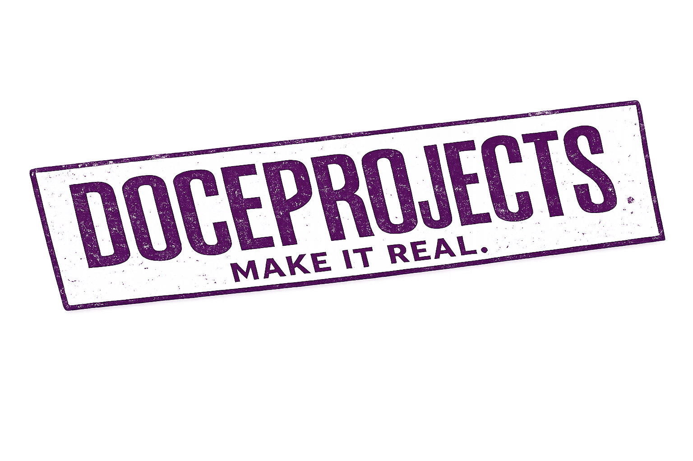

Todos los disenos visuales para los primeros 12 posts del Instagram de DOCEPROJECTS. Cada diseno esta renderizado a tamano real (1080x1080 para feed, 1080x1350 para carousels) y escalado al 50% para navegacion.
Como exportar cada imagen:
Inspeccionar<div class="post ...">Capture node screenshotAlternativa: Usa estos disenos como referencia visual para recrear en Canva Pro con tu brand kit cargado.
